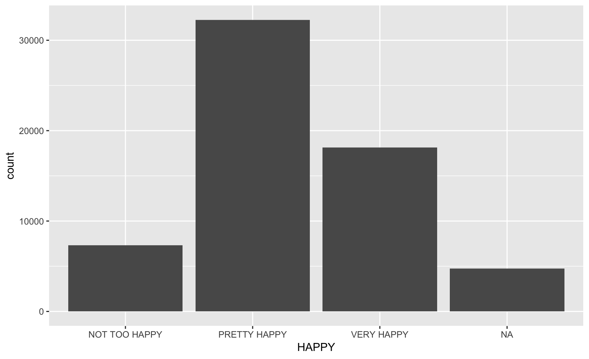
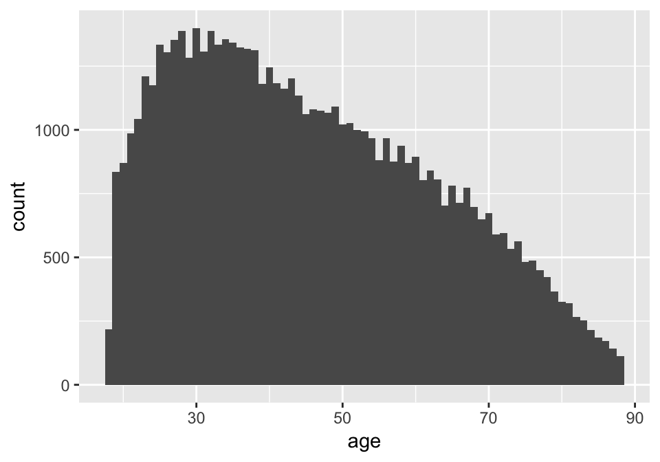
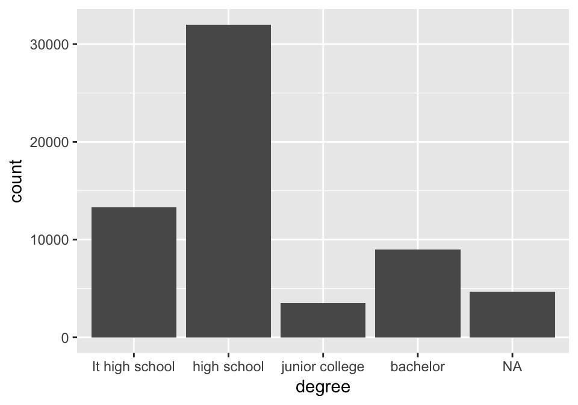

dplyr examples
Heike Hofmann
Outline
- cleaning and upgrading the HAPPY data
- working with
group_by and summarise
The Happy data from GSS
The General Social Survey (GSS) has been run by NORC every other year since 1972 to keep track of current opinions across the United States.
An excerpt of the GSS data is available from our course website. Dowload the file HAPPY.rds and put the file into a folder called “data” next to your Rmd file. The following command is going to load the data into your R session:
library(tidyverse)
HAPPY <- readRDS("data/HAPPY.rds")
You can find a codebook with explanations for each of the variables at https://gssdataexplorer.norc.org/
A first look
## 'data.frame': 62466 obs. of 11 variables:
## $ HAPPY : chr "NOT TOO HAPPY" "NOT TOO HAPPY" "PRETTY HAPPY" "NOT TOO HAPPY" ...
## $ YEAR : int 1972 1972 1972 1972 1972 1972 1972 1972 1972 1972 ...
## $ AGE : chr "23" "70" "48" "27" ...
## $ SEX : chr "FEMALE" "MALE" "FEMALE" "FEMALE" ...
## $ MARITAL : chr "NEVER MARRIED" "MARRIED" "MARRIED" "MARRIED" ...
## $ DEGREE : chr "BACHELOR" "LT HIGH SCHOOL" "HIGH SCHOOL" "BACHELOR" ...
## $ FINRELA : chr "AVERAGE" "ABOVE AVERAGE" "AVERAGE" "AVERAGE" ...
## $ HEALTH : chr "GOOD" "FAIR" "EXCELLENT" "GOOD" ...
## $ WTSSALL : num 0.445 0.889 0.889 0.889 0.889 ...
## $ PARTYID : chr "IND,NEAR DEM" "NOT STR DEMOCRAT" "INDEPENDENT" "NOT STR DEMOCRAT" ...
## $ POLVIEWS: chr "IAP" "IAP" "IAP" "IAP" ...
The variable HAPPY
HAPPY %>%
ggplot(aes(x = HAPPY)) + geom_bar()

Cleaning up HAPPY
- make all strings lowercase:
tolower
- convert into a factor variable, levels are in right order
HAPPY <- HAPPY %>% mutate(
happy = factor(tolower(HAPPY))
) %>% select(-HAPPY)
head(HAPPY)
## YEAR AGE SEX MARITAL DEGREE FINRELA HEALTH
## 1 1972 23 FEMALE NEVER MARRIED BACHELOR AVERAGE GOOD
## 2 1972 70 MALE MARRIED LT HIGH SCHOOL ABOVE AVERAGE FAIR
## 3 1972 48 FEMALE MARRIED HIGH SCHOOL AVERAGE EXCELLENT
## 4 1972 27 FEMALE MARRIED BACHELOR AVERAGE GOOD
## 5 1972 61 FEMALE MARRIED HIGH SCHOOL ABOVE AVERAGE GOOD
## 6 1972 26 MALE NEVER MARRIED HIGH SCHOOL ABOVE AVERAGE GOOD
## WTSSALL PARTYID POLVIEWS happy
## 1 0.4446 IND,NEAR DEM IAP not too happy
## 2 0.8893 NOT STR DEMOCRAT IAP not too happy
## 3 0.8893 INDEPENDENT IAP pretty happy
## 4 0.8893 NOT STR DEMOCRAT IAP not too happy
## 5 0.8893 STRONG DEMOCRAT IAP pretty happy
## 6 0.4446 IND,NEAR DEM IAP pretty happy
Data Cleaning
- Data cleaning: the values “IAP”, “DK” and “NA” all encode missing values. We have to replace all of these instances by the value
NA.
- Check the type of the variable and cast into the right type.
- Bring all levels of factors into a sensible order.
Recoding missing values
Object in replace does not have to be a variable, a data frame can also be used:
HAPPY <- replace(HAPPY, HAPPY %in% c("IAP", "DK", "NA"), NA)
the remaining cleaning is just pretty tedious manual work …
The variable AGE
HAPPY <- HAPPY %>% mutate(
age = replace(AGE, AGE == "89 AND OLDER", 89),
age = as.numeric(age)
) %>% select(-AGE)
HAPPY %>% ggplot(aes(x = age)) + geom_histogram(binwidth=1)

The variable DEGREE
HAPPY <- HAPPY %>% mutate(
degree = factor(tolower(DEGREE)),
degree = factor(degree, levels=c("lt high school", "high school", "junior college", "bachelor", "graduate school"))
) %>% select(-DEGREE)
HAPPY %>% ggplot(aes(x = degree)) + geom_bar()

Working with happy
happy data included in the classdata package
upgrade the package: devtools::install_github("heike/classdata")
library(classdata)
data("happy", package="classdata")
head(happy)
## happy year age sex marital degree finrela
## 1 not too happy 1972 23 female never married bachelor average
## 2 not too happy 1972 70 male separated lt high school above average
## 3 pretty happy 1972 48 female separated high school average
## 4 not too happy 1972 27 female separated bachelor average
## 5 pretty happy 1972 61 female separated high school above average
## 6 pretty happy 1972 26 male never married high school above average
## health polviews partyid wtssall
## 1 good <NA> ind,near dem 0.4446
## 2 fair <NA> not str democrat 0.8893
## 3 excellent <NA> independent 0.8893
## 4 good <NA> not str democrat 0.8893
## 5 good <NA> strong democrat 0.8893
## 6 good <NA> ind,near dem 0.4446
Summarising Happiness
Use scores for happy factor to summarise overall happiness level, i.e. not too happy = 1, pretty happy = 2, and very happy = 3
happy %>% summarise(
m.happy = mean(as.numeric(happy), na.rm=TRUE)
)
## m.happy
## 1 2.186969
happy %>% group_by(sex) %>% summarise(
m.happy = mean(as.numeric(happy), na.rm=TRUE)
)
## # A tibble: 2 x 2
## sex m.happy
## <fct> <dbl>
## 1 female 2.19
## 2 male 2.18
Your turn: group_by and summarise

For this your turn use the happy data from the classdata package
- How do average happiness levels change over age?
- Are Republicans or Democrats happier? Compare average happiness levels over
partyid.
- How are financial relations associated with average happiness levels? Is this association different for men and women?
- Find a plot that shows the differences for each one of the summaries.
Your turn: asking questions
For this your turn use the happy data from the classdata package
- Investigate what other variable(s) might be associated with happiness. Plot it.
- Submit your code in Canvas for one point of extra credit.
Helper functions (1)
n() provides the number of rows of a subset:
happy %>% group_by(sex) %>% summarise(n = n())
## # A tibble: 2 x 2
## sex n
## <fct> <int>
## 1 female 34904
## 2 male 27562
tally() is a combination of summarise and n
happy %>% group_by(sex) %>% tally()
## # A tibble: 2 x 2
## sex n
## <fct> <int>
## 1 female 34904
## 2 male 27562
Helper functions (2)
count() is a further shortcut of group_by and tally:
happy %>% count(sex, degree)
## # A tibble: 12 x 3
## sex degree n
## <fct> <fct> <int>
## 1 female lt high school 7500
## 2 female high school 18419
## 3 female junior college 2047
## 4 female bachelor 4731
## 5 female graduate 2112
## 6 female <NA> 95
## 7 male lt high school 5825
## 8 male high school 13598
## 9 male junior college 1425
## 10 male bachelor 4279
## 11 male graduate 2357
## 12 male <NA> 78